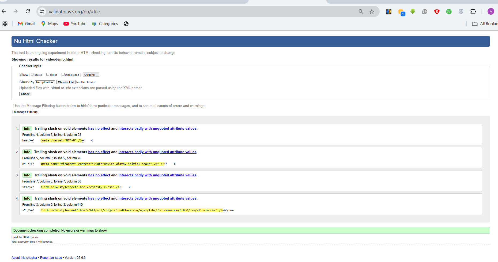
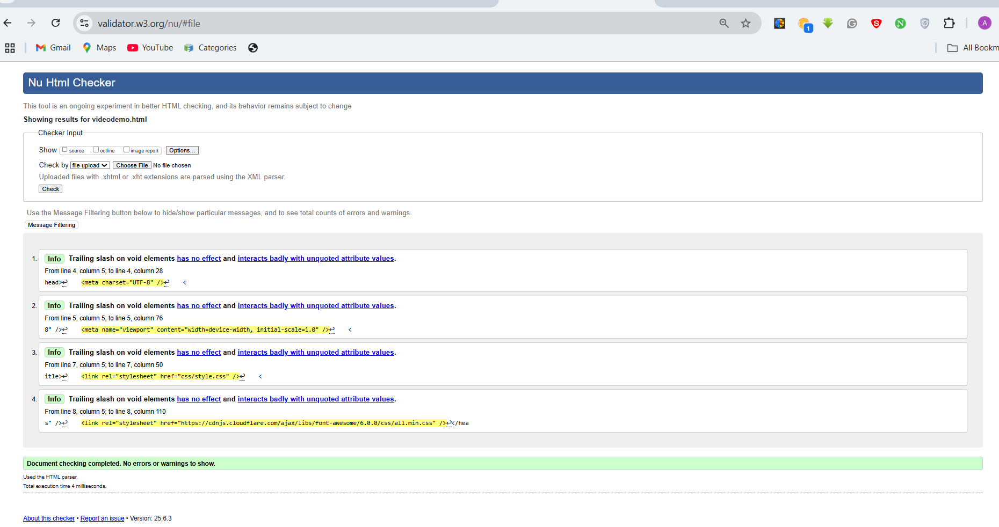
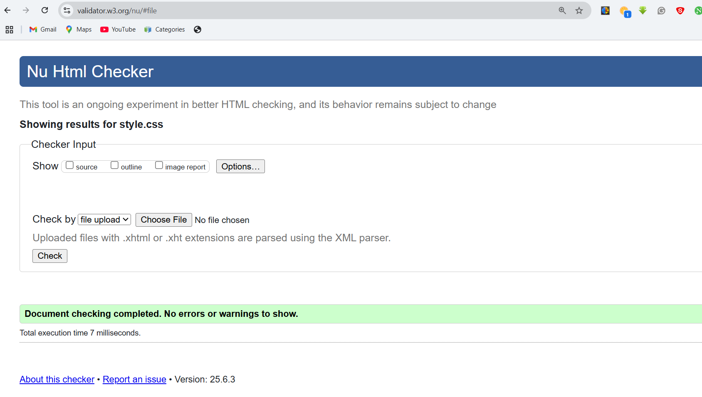

Site Development Report
Learning Experience
My journey into web development through this module has been both challenging and rewarding. As a Computer Science student at the University of Northampton, this was my first serious attempt at building a complete website from scratch. The learning curve was steep, but each hurdle contributed significantly to my growth as a developer.
Initially, I struggled with CSS layouts and responsive design. Concepts like Flexbox and Grid seemed complex at first, but through continuous practice and references such as CSS-Tricks and MDN Web Docs, I gradually gained confidence and clarity.
"One of my biggest achievements was implementing a fully responsive navigation menu that transforms into a hamburger menu on mobile devices — something I initially thought was impossible without JavaScript!"
Development Process
The website was developed in several key phases:
- Planning Phase (Week 1–2): Researched portfolio website designs, created wireframes, and outlined the site structure.
- Initial Development (Week 3–4): Built the basic HTML layout and applied core CSS styling.
- Responsive Design (Week 5–6): Adjusted layout for various screen sizes and added mobile responsiveness.
- Testing & Refinement (Week 7–8): Conducted cross-browser testing and resolved layout and compatibility issues.
Design Decisions
The design approach was influenced by modern portfolio trends and material design principles:
- Color Scheme: I used a professional palette including #2c3e50 (dark blue) and #3498db (light blue). These were inspired by the University of Northampton’s branding to maintain an academic and polished feel.
- Typography: The font 'Segoe UI' was chosen for its clarity and readability, with fallbacks to ensure consistency across devices.
- Layout: A clean, minimalistic structure was inspired by examples from Awwwards and Dribbble.
Challenges and Solutions
Some of the key challenges I encountered included:
- Creating a fully responsive navigation bar without JavaScript
- Maintaining consistent spacing and alignment across screen sizes
- Ensuring proper contrast and accessibility throughout the site
- Fixing cross-browser compatibility bugs, especially in Firefox
Validation Results
HTML Validation:
 

CSS Validation:
Video Demonstration
A full walkthrough of the website and its features can be viewed here: Portfolio Website Demo
Future Improvements
While I am proud of the current version, there are several improvements I aim to implement in future updates:
- Add dark mode toggle functionality
- Enhance interactivity using JavaScript
- Optimize performance and loading times
- Showcase additional projects as they are completed